Introduction
→ A group of cells that are similar in structure and/or work together to achieve a particular function forms a tissue.
→ Most of the tissues in plants are supportive, which provides them with structural strength.
→ These tissues are dead, since dead cells can provide mechanical strength as easily as live ones, and need less maintenance.
→ Plant Tissues are of two types Meristematic & Permanent tissues.
Meristematic Tissue
→ These are simple living tissues having thin walled compactly arranged immature cells which are capable of division and formation of new cells.
Features of Meristematic tissues:
→ Thin primary cell wall (cellulosic).
→ Intercellular spaces are absent (compact tissue).
→ Generally vacuoles are absent, dense cytoplasm & prominent nuclei are present.
→ Large numbers of cell organelles are present.
→ Active metabolic state, stored food is absent.
→ Actively dividing cells are present in growing regions of plants, example: root & shoot tips.
Classification of Meristematic Tissues on the Basis of Origin
• Primary (Promeristem)
→ Derived directly from the meristems of embryo.
→ They consist of cells derived from primary meristem.
→ They add to primary growth of plants.
• Secondary Meristematic Tissues
→ Formed by permanent tissues.
→ These are having cells derived from primary permanent tissue.
→ They usually add to the diameter of plants.
→ A group of cells that are similar in structure and/or work together to achieve a particular function forms a tissue.
→ Most of the tissues in plants are supportive, which provides them with structural strength.
→ These tissues are dead, since dead cells can provide mechanical strength as easily as live ones, and need less maintenance.
→ Plant Tissues are of two types Meristematic & Permanent tissues.
Meristematic Tissue
→ These are simple living tissues having thin walled compactly arranged immature cells which are capable of division and formation of new cells.
Features of Meristematic tissues:
→ Thin primary cell wall (cellulosic).
→ Intercellular spaces are absent (compact tissue).
→ Generally vacuoles are absent, dense cytoplasm & prominent nuclei are present.
→ Large numbers of cell organelles are present.
→ Active metabolic state, stored food is absent.
→ Actively dividing cells are present in growing regions of plants, example: root & shoot tips.
Classification of Meristematic Tissues on the Basis of Origin
• Primary (Promeristem)
→ Derived directly from the meristems of embryo.
→ They consist of cells derived from primary meristem.
→ They add to primary growth of plants.
• Secondary Meristematic Tissues
→ Formed by permanent tissues.
→ These are having cells derived from primary permanent tissue.
→ They usually add to the diameter of plants.
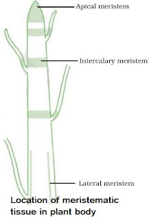
Classification of Meristematic Tissues on the Basis of Location
• Apical Meristem
→ It is present at the growing tips of stems and roots.
→ Cell division in this tissue leads to the elongation of stem & root, thus it is involved in primary growth of the plant.
• Intercalary Meristem
→ It is present behind the apex.
→ It is the part of apical meristem which is left behind during growth period.
→ These are present at the base of leaf & internode region.
→ These lead to the increase in the length of leaf (Primary), example: in grass stem, bamboo stem, mint stem etc.
• Lateral Meristem
→ It is also called as secondary meristem.
→ It occurs along the sides of longitudinal axis of the plant.
→ It gives rise to the vascular tissues.
→ Causes growth in girth of stem & root.
→ They are responsible for secondary growth.
Permanent Tissue
→ The permanent tissues are composed of those cells which have lost their capability to divide.
→ They have definite shape, size and thickness. The permanent tissue may be dead or living.
→ The division & differentiation of the cells of meristematic tissues give rise to permanent tissues.
→ In cell differentiation, developing tissue and organs change from simple to more complex forms to become specialized for specific functions.
→ The cells of permanent tissue loose the capacity to divide and attain a permanent shape, size and function.
• Permanent tissues are classified into two types on the basis of Structure and Composition i.e. Simple Permanent Tissues and Complex Permanent Tissues.
Simple Permanent Tissues
→ These are made up of same type of cells which are similar structurally and functionally.
→ They include two types of tissue Protective tissues and Supporting Tissues.
• Protective Tissues: These tissues are primarily protective in function.
→ They consist of Epidermis and Cork/Phellem.
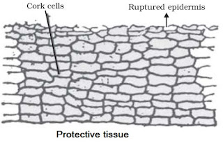
(i) Epidermis
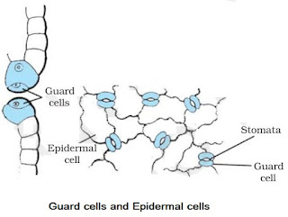
→ Epidermis forms one cell thick outermost layer of various body organs of plants such as leaves, flowers, stems and roots.
→ Epidermis is covered outside by cuticle. Cuticle is a water-proof layer of waxy substance called as cutin which is secreted by the epidermal cells.
→ Cuticle is very thick in xerophytes.
→ Cells of epidermis of leaves are not continuous at some places due to the presence of small pores called as stomata.
→ Each stomata is guarded by a pair of bean-shaped cells called as guard cells. These are the only epidermal cells which possess chloroplasts, the rest being colourless.
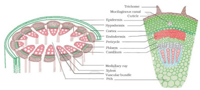
Functions of Epidermis
→ The main function of epidermis is to protect the plant from desiccation and infection.
→ Cuticle of epidermis cuts the rate of transpiration and evaporation of water and prevents wilting.
→ Stomata in epidermis allow gaseous exchange to occur during photosynthesis respiration.
→ Stomata also helps in transpiration.
(ii) Cork or Phellem
→ In older roots and stems, tissues at the periphery become cork cells or phellem cells.
→ Cork is made up to dead cells with thick walls and do not have any intercellular spaces.
→ The cell walls in cork deposit waxy substance called as suberin.
→ The cells of cork become impermeable to water and gases due to the deposition of suberin.
→ The cork cells are without any protoplasm but are filled with resins or tannins.
Functions of Cork
→ Cork is protective in function. Cork cells prevent desiccation, infection and mechanical injury.
→ Imperviousness, lightness, toughness, compressibility and elasticity make the cork commercially valuable.
→ Cork is used for insulation, as shock absorber in linoleum.
→ Cork is used in the making of a variety of sport goods such as cricket balls, table tennis, shuttle cocks, wooden paddles etc.
• Supporting Tissues: These are supportive in function.
→ There are three types of Supporting tissues i.e. Parenchyma, Collenchyma and Sclerenchyma.

→ It is the fundamental tissue.
→ Tissue first time evolved in bryophyte.
→ Thin walled cells, oval or spherical in structure.
→ Cell wall mainly composed of cellulose & pectin.
→ Large central vacuole for food & water storage.
→ Primary function is food storage.
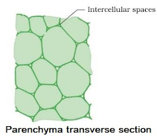
→ In typical parenchyma chlorophyll is absent.
→ Chloroplast containing parenchyma tissue are chlorenchyma which perform photosynthesis such as mesophyll of leaves.
→ In hydrophytic plants aerenchyma (a type of parenchyma containing air spaces) provides buoyancy.
→ Parenchyma provides turgidity to cells.
(ii) Collenchyma
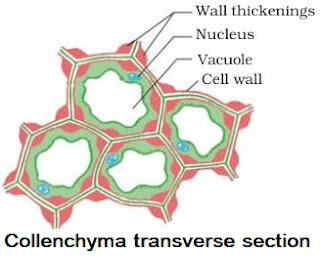
→ Elongated cells with thick corners.
→ Localized cellulose & pectin thickening.
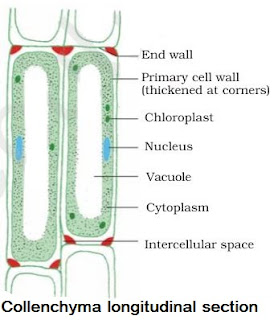
→ Provides flexibility to plant parts & easy bending of various parts of plant.
→ Present only in herbaceous dicot stem.
→ Present at thin margin of leaves.
→ Few chloroplasts may be present.
→ Gives mechanical strength & elasticity to the growing stems.
(iii) Sclerenchyma (Scleras–hard) Strengthening tissue.
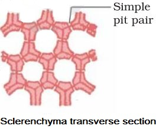
→ Composed of extremely thick walled cells with little or no protoplasm.
→ Cells are dead & possess very thick lignified walls.
→ Lignin is water-proof material.
→ Intercellular spaces are absent.
• Cells of sclerenchyma are of two types Sclereids and Fibres.
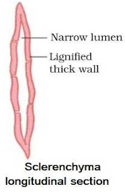
→ These are also called grit cells or stone cells.
→ These are small cells, where lumen is so small due to higher thickening of cell wall, as present in drup fruit (mango, coconut, walnut) in legume seeds (Macrosclereid).
• Fibers
→ They are very long, narrow, thick, lignified cells. Lumen is large as compared to sclereids.
They are generally 1-3 mm long.
→ In the thick walls of both the fibres and sclereids are present thin areas called as pits.
→ Sclrenchyma Fibres are used in the manufacture of ropes, mats & certain textile fibres.
→ Jute and coir are obtained from the thick bundle of fibres.
Difference between Parenchyma, Collenchyma and Sclerenchyma
Features | Parenchyma | Collenchyma | Sclerenchyma |
| Cell shape | Isodiametric cells which are oval, spherical or polygonal in shape. | Circular, oval or polyhedral. | Variable in shape. Fibres and sclereids. |
| Cell wall | Thin cellulosic cell wall. | Uneven thickening on their cell wall. | Lignified secondary cell wall present. |
| Cytoplasm | Abundant | Present | Absent |
| Nucleus | Present (Living tissue) | Present (Living tissue) | Absent (Dead tissue) |
| Vacuoles | Large vacuole | Vacuolated | Absent |
| Intercellular spaces | Present | Absent | Absent |
| Occurrence | Basically packing tissue, all soft part of plant-pith, cortex, medullary rays. | Dicot stems, petiole and beneath the epidermis. Absent in monocot and roots. | Dicot hypodermis, bundle sheath, pericycl, seed, pulp of fruits. |
| Functions | Food storage, photosynthesis. | Provide tensile strength, mechanical support, photosynthesis. | Protection from stress and strain, mechanical strength. |
Complex Permanent Tissues
→ It consists of more than one type of cells which work together as a unit.
→ It helps in transportation of organic materials, water & minerals.
→ It is also known as conducting or vascular tissue.
→ Xylem & phloem together form vascular bundles.
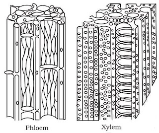
Xylem
→ It is also known as wood and is a vascular and mechanical tissue.
→ Thick walled cells are found in the form of tubular passages.
→ Xylem consists of four types of cells called as elements Tracheids, Vessels, xylem parenchyma and xylem sclerenchyma.
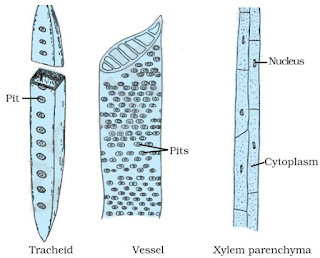
(i) Tracheids
→ They are elongated angular dead cells (primitive elements) mainly involved in conduction of water and minerals in gymnosperms.
(ii) Vessles
→ They are advance element (generally found in angiosperms).
→ Vessels are cylindrical tube like structures placed one above the other end to end which form a continuous channel for efficient conduction of water.
(iii) Xylem parenchyma
→ They are small & thick walled parenchymatous cells subjected for storage of starch (food).
(iv) Xylem sclerenchyma
→ Thy are non-living fibres with thick walls and narrow cavities provide mechanical support.
→ Except xylem parenchyma all other xylem elements are dead.
→ The annual rings present in the trunk of a tree are xylem rings.
→ By counting the number of annual rings, we can determine the age of
a tree.
Phloem
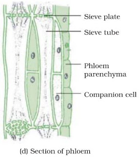
→ They also consist of both parenchymatous and schlerenchymatous cells.
→ Phloem consists of four types of element which are Sieve tubes, Companion cells, Phloem fibre and Phloem parenchyma.
(i) Sieve tubes
→ Sieve tubes are slender tube like structures made up of elongated, thin walled cells placed end to end.
→ The end walls of sieve tube cells are perforated by numerous pores, called as sieve plates.
→ Nucleus of sieve cell degenerates at maturity. However, cytoplasm persists, because of protoplasmic continuation of sieve tube with companion cell through plasmodesmata.
→ Sieve cells possess slime protein or protein which is concerned with growth and repair of sieve cells.
(ii) Companion cells
→ Companion cells have dense cytoplasm and prominent nuclei.
→ Sieve cells & companion cells are so called sister cells because they originate from single mother cell.
(iii) Phloem fibre
→ They give mechanical support to sieve tubes.
(iv) Phloem parenchyma
→They store food and help in radial conduction of food.
(v) Leptome
→ Main part of phloem involved in conduction of food, which is sieve tube.
→ In xylem, only unidirectional movement is possible while in phloem bidirectional movement can occur.
→ In phloem, except phloem sclerenchyma all elements are living.
Features | Xylem | Phloem |
Cells: Living/dead | Dead | Living |
| Cell walls: Thickness | Thick | Thin |
| Material | Lignin | Cellulose |
| Permeability | Impermeable | Permeable |
| Cross walls | None | Sieve plates |
| Cytoplasm | None | Yes |
| Function | Carries water and salts | Carries sugars |
| Direction of flow | Upwards | Down and up |
| Special features | Fibres | Companion cells |
 English
English Gujarati
Gujarati Hindi
Hindi Kannada
Kannada Malayalam
Malayalam Marathi
Marathi Punjabi
Punjabi Sinhala
Sinhala Tamil
Tamil Telugu
Telugu